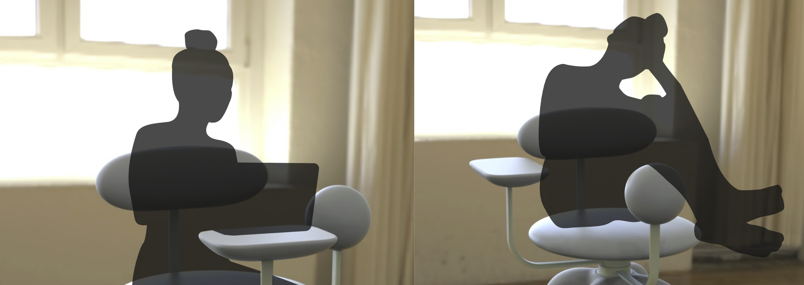
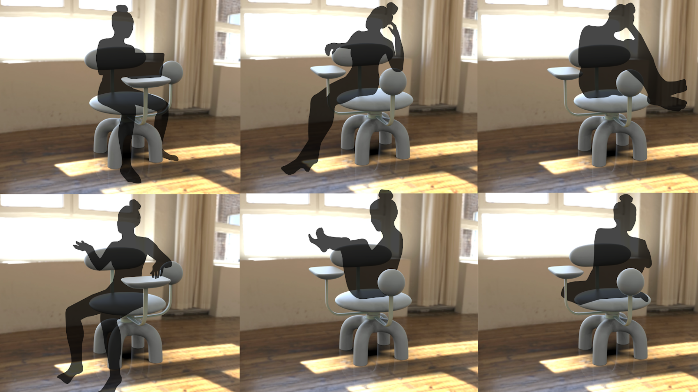
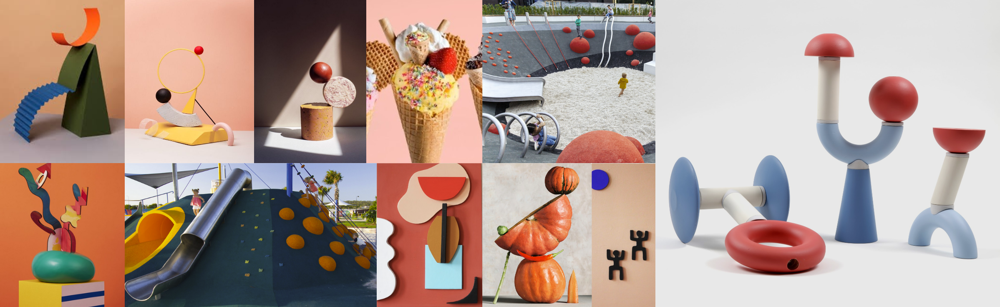
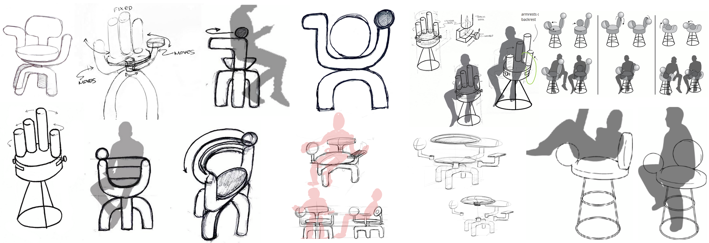
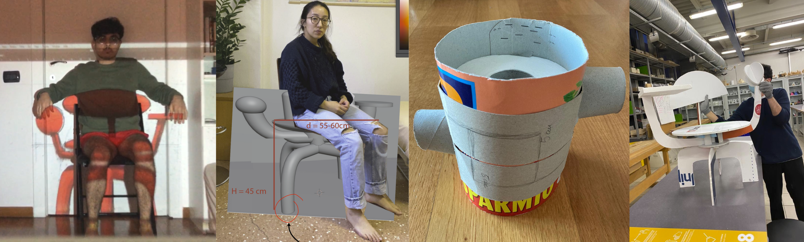
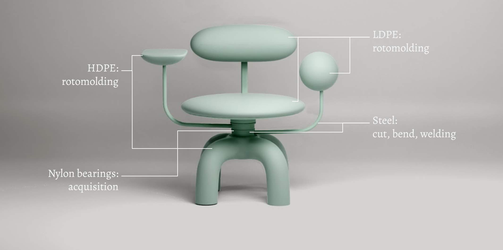
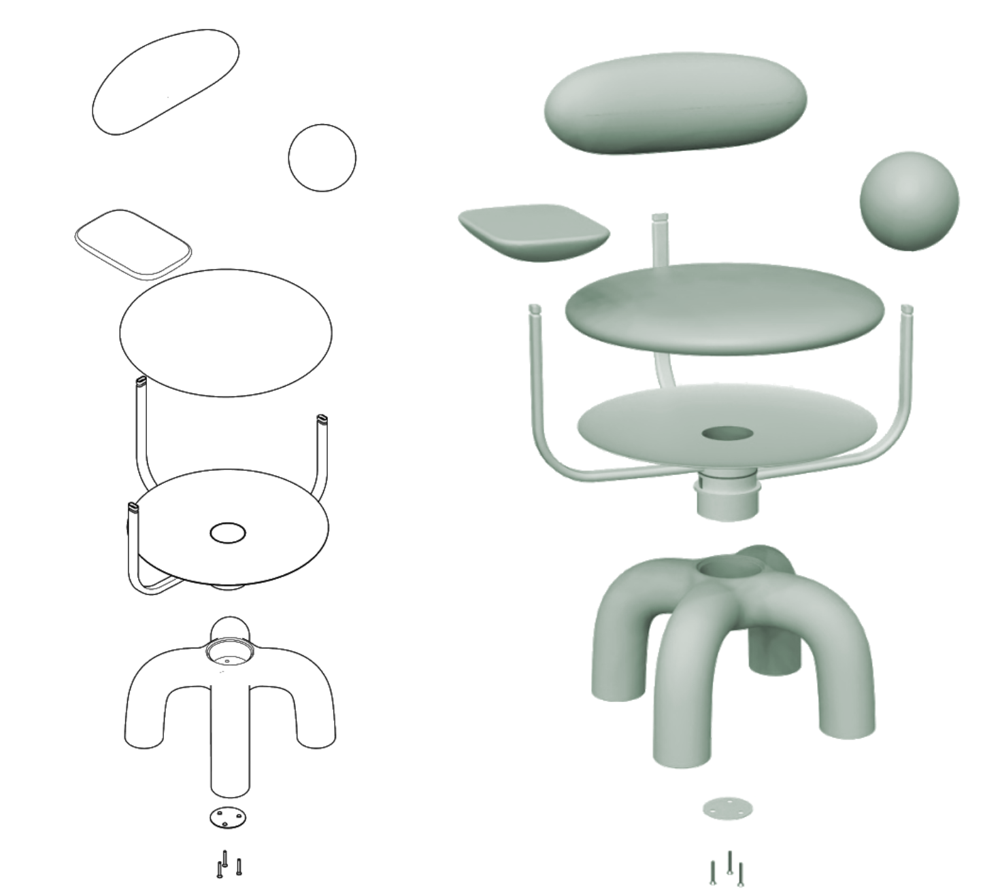
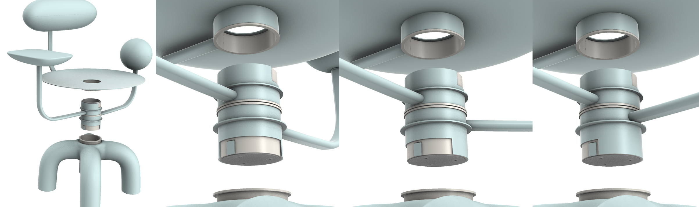
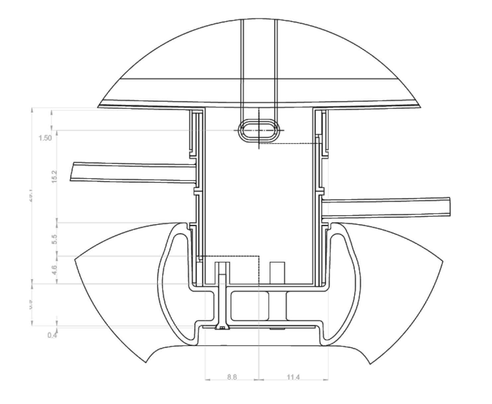
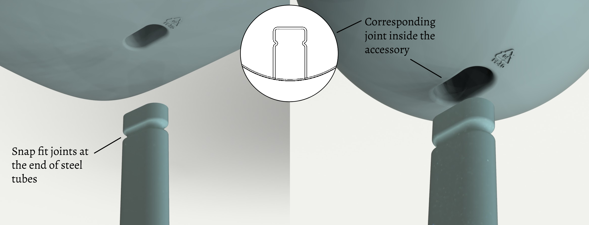

Introduction
In the fall of 2020, a group of POLIMI students and I collaborated with the Italian furniture company Magis to create a product for its collection. Over the course of four months, we went from concept development to models and renders that we presented to the company. Given the unique circumstances, this project was done almost exclusively through online collaboration and prototyping. In addition to creating a compelling form of seating for a prominent Italian brand, we learned how to successfully and efficiently develop a product through remote collaboration.

Scenario
Covid-19 has accelerated the work-from-home movement. This transition has intensified the need for products that improve the well-being of the home worker. Our team explored ways we might be able to create dynamic seating options to improve the often static and sedentary nature of desk work.

Research
The following points were the most prominent insights we gleaned from our research. We wanted to find trends in the a-typical ways people use chairs. We found that it is common for users to ignore the ergonomic nudges that chairs provide, sitting in the unusual ways illustrated in Bruno Munari’s 1944 piece “One comes home tired from working all day and finds an uncomfortable chair”. Additionally, after reviewing the academic literature on sitting, we concluded that movement while in a seated position was something that users had a propensity for. Most notably, in “A Conversation With Galen Cranz”, Cranz mentions that “A 2001 study of desk-bound office workers found that the average person made 53 changes to his or her torso position in an hour. Humans need to move in natural, healthy ways—but they also need to get their work done.” Lastly, we conducted some web-based ethnographic studies of vloggers who shared their work-from-home routines. Studying their behaviors confirmed our last two conclusions on the need for active seating that supports a-typical body positions.

(left to right) Image from Bruno Munari’s 1944 piece “One comes home tired from working all day and finds an uncomfortable chair”, Galen Cranz, and screen shots from work-from-home vlogs.
Conclusions
2020 was a rebirth for the domestic space. Kitchens are classrooms by day and living rooms are theaters at night. Our balconies have become our bistros, our sun-tanning spots, and our laundry rooms. So to celebrate 2020, adaptability, and the new, modern home, we have created the Omino chair. It’s playful geometric shapes & bright colors reflect the bright, ludic nature of the Magis brand. With Omino’s rotating arms, we hope to introduce an opportunity for Magis to include more seating options in their collection that invite movement and play.
Moodboard
We developed a moodboard that looked to focus the energy we wanted our chair to embody. We included images of playgrounds and bright geometric shapes that evoked fun, play and movement.

Development
Through a series of sketches and rough prototypes, we realized that we were to create a chair that allowed for different body positions. To achieve this, we created a chair that had two arms that spun around the central axis of the seat. On one arm was a soft, spherical arm rest. On the other arm was a small table for writing notes or having a coffee.


Technical Components
Below you can find images of the assembly, a technical drawing of how the innermost rotational mechanism works, and a breakdown of the materials used to develop the chair.




Sustainability
Although we’d like Omino to get passed down for generations, we know there will be a day where the chair will need to be disposed of. With this in mind, we designed Omino to be easily disassembled into its component parts. There’s no need to pry threads out of plastic parts or to scrape coating from bushings. Simply disassemble, sort, and recycle. Additionally, because we used 2 different types of plastics, we placed on each plastic part its recycling code.
